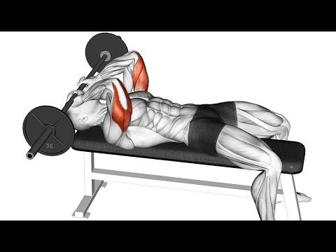

Curl barre

Le Curl Barre est un exercice de musculation qui cible principalement les muscles biceps. Cet exercice se réalise en utilisant une barre droite spécialement conçue pour les curls biceps.
Curl haltères prise neutre

Le Curl Haltères Prise Neutre est un exercice de musculation qui cible principalement les muscles biceps.
Suspension Trainer Extension

La Suspension Trainer Extension (extension avec un système de suspension) est un exercice de musculation qui cible principalement les muscles triceps
Triceps Pushdown

Le Triceps Pushdown (extension des triceps) est un exercice de musculation qui cible spécifiquement les muscles triceps.
Skullcrusher

Le Skullcrusher (littéralement "écrase-crâne") est un exercice de musculation qui cible principalement les muscles des triceps.
Cet exercice est réalisé en position allongée sur un banc, avec une barre tenue au-dessus de la poitrine, les bras tendus à la verticale.
Cable Preacher Hammer Curl

Le Cable Preacher Hammer Curl (curl marteau avec câble sur un pupitre) est un exercice de musculation qui cible les muscles brachiaux,
notamment les muscles brachiaux (biceps brachial et brachial antérieur) ainsi que les muscles brachio-radial.
Lying Cable Curl

Le Lying Cable Curl (curl allongé avec câble) est un exercice de musculation qui cible spécifiquement les muscles biceps.
Cet exercice se réalise en position allongée sur un banc, le dos plaqué contre le banc, et en utilisant une machine à câble.
Behind The Back Cable Curl

Le Behind The Back Cable Curl (curl avec câble derrière le dos) est un exercice de musculation qui cible les muscles biceps.
Barbell Drag Curl

La barbell drag curl est un exercice de biceps qui cible spécifiquement les muscles du bras supérieur.